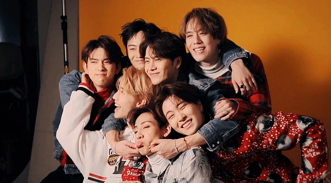

GOT7 / 갓세븐
“7個幸運的男人聚集在一起直到永遠”
“7個幸運的男人聚集在一起直到永遠”
GOT7(韓文名갓세븐)為韓國JYP娛樂於2014年推出的7人男團，出道初期以JYP娛樂首支嘻哈團體為號召，擅長表演「martial arts tricking」
後來則發展出不同的音樂風格，搭配活潑強烈的舞台表演。全員皆會作詞作曲
官方粉絲名為「I GOT7」，意思是「歌迷們同時擁有了GOT7與幸運」，
由於I GOT7的韓文發音縮語為Ah-Ga-Se，成員們也經常暱稱歌迷為「아가새」（發音為Ah-Ga-Se），是韓文「鳥寶寶」的意思。官方應援物為綠色鳥狀手燈
練習css的部分